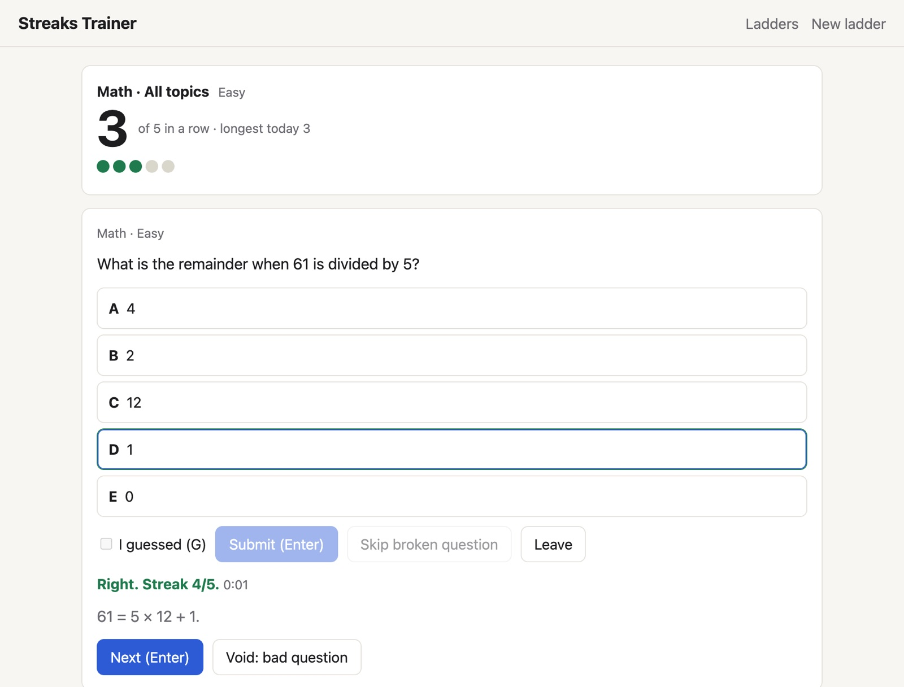
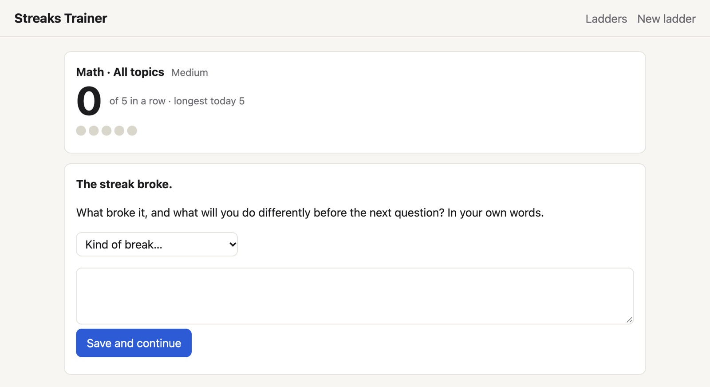

Things I use ·: the study method built into the app
A study app where one wrong answer resets your streak
- Problem
- A percent score hides weak spots: it can’t tell knowing a topic from guessing well.
- Result
- A working app that moves from easy to hard only on streaks of 10, 10 and 5 right in a row. It comes with sample questions whose answers are all checked by a program.
Added . Last changed .
- Problem
- A percent score hides weak spots: it can’t tell knowing a topic from guessing well.
- Built
- A study app built so a score can’t lie. 80% can mean knowing it or guessing well. Here one wrong answer, or one lucky guess, resets the streak to zero, and the miss gets written down before the next question.
- My rules
- The app enforces the rules
- A guess does not count
- No repeats
- AI wrote
- most of the code
- I tested
- Every main step tried from start to finish
- Every sample answer checked by a program
- Tested by using the app
- Now
- A working app that moves from easy to hard only on streaks of 10, 10 and 5 right in a row. It comes with sample questions whose answers are all checked by a program.
Read the script
A study app for any multiple-choice subject, where one wrong answer resets your streak. A percent score hides weak spots. 80% can mean you know it, or that you guess well. Work from easy to hard. A guess resets the streak, like a wrong answer. Each break needs a written note. 10 right in a row clears easy, then 10 on medium, and 5 on hard. 66 sample questions come with it, every answer checked by a program. A working app, and nothing leaves the computer. Every break gets a written note. Details and code are below.
A study app built so a score can’t lie. 80% can mean knowing it or guessing well. Here one wrong answer, or one lucky guess, resets the streak to zero, and the miss gets written down before the next question. My part: the streak rules and the testing. AI wrote most of the code.
My rules
- The app enforces the rules
- A guess does not count
- No repeats
AI wrote
most of the code
I tested
- Every main step tried from start to finish
- Every sample answer checked by a program
- Tested by using the app
The problem
A streak tells the two apart, and the payoff comes at each break: before the next question, you write down what went wrong and what you’ll do differently.

Decisions I made
- The app enforces the rules. Streaks, cleared levels and the required note are handled behind the scenes, so the screen can’t stray from the method.
- A guess doesn’t count. A right answer marked “I guessed” resets the count, like a wrong one.
- No repeats. Each question is shown at most once, so a streak can’t come from memory.
- History is never rewritten. Every answer is saved, and the streak is counted back from the latest one.
- Any subject. Sections and topics come from one data file, with nothing about a subject built into the code.
- Set up a plana section or one topic, with streak targets
- A new questionat the current level, never one shown before
- Right, not guessedstreak plus one
- Wrong, or guessedthe streak resets to zero
- Break notewhat broke it and what to do differently, before the next question
- Level clearedeasy, then medium, then hard, then optional speed rounds
How it was tested
- Every main step tried, start to finish: plans, notes, cleared levels, speed rounds, the tracker and loading questions.
- Every sample answer checked by a program. The 66 sample questions are made from fill-in patterns.
- Tested in real use.

Scope
- A general public version: the parts tied to one subject, and the original questions, are removed.
- The streak method is credited in the code’s notes; the project is not linked to its author.
ryanwisth/streaks-trainerThe code, with its real status and limits.
See the code on GitHub →